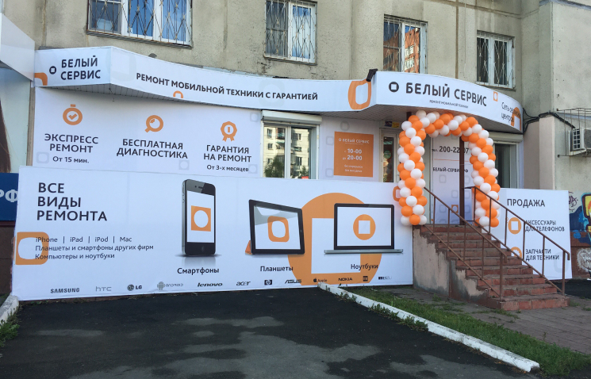
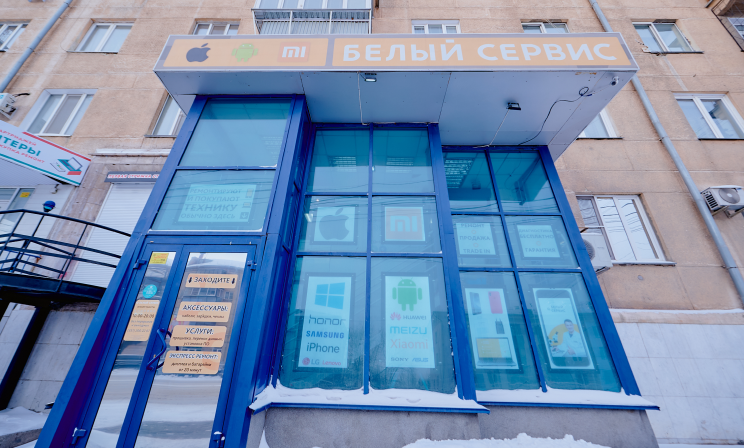
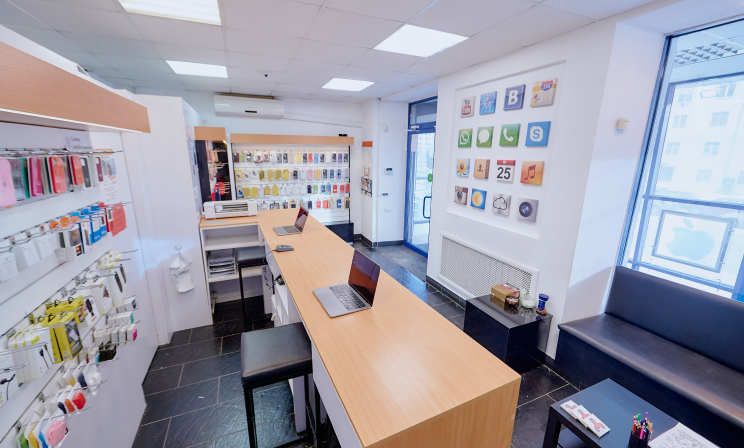

Ремонт осуществляется
первоклассными специалистами
Средний опыт работы наших мастеров 4 года





Сервисные центры
Первый сервисный центр Белый Сервис распахнул свои двери 28 марта 2012 года по адресу г.
Челябинск, ул. Энгельса 75.
На текущий момент «Белый Сервис» имеет три филиала со своими приемщиками и мастерами.
Гибко
распределяем рабочую нагрузку: если персонал на одной из точек перегружен заказами, то
часть
работ передается их менее загруженным коллегам из другого филиала.